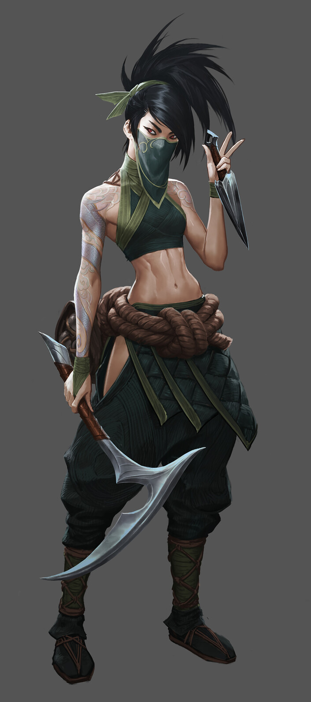
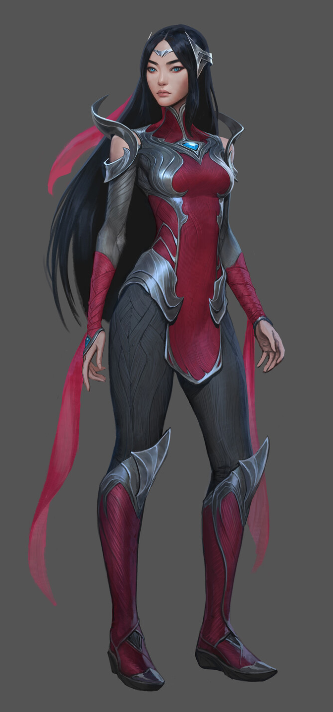
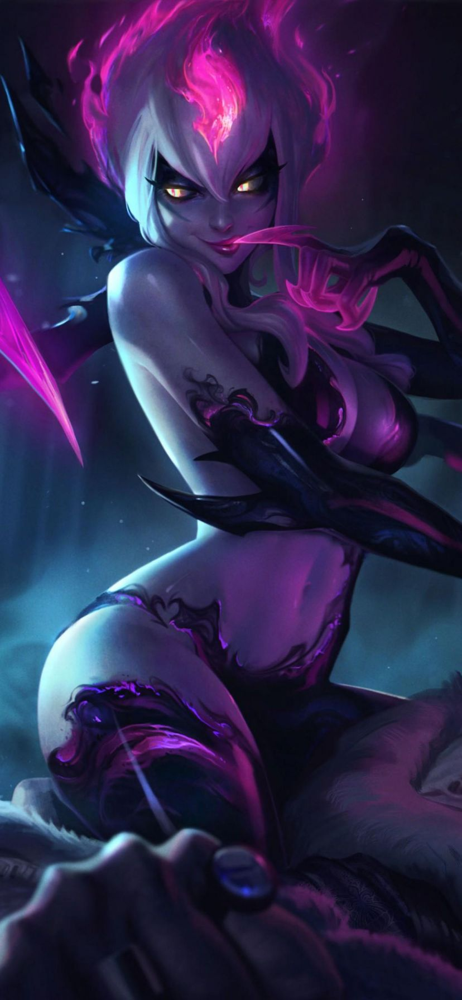
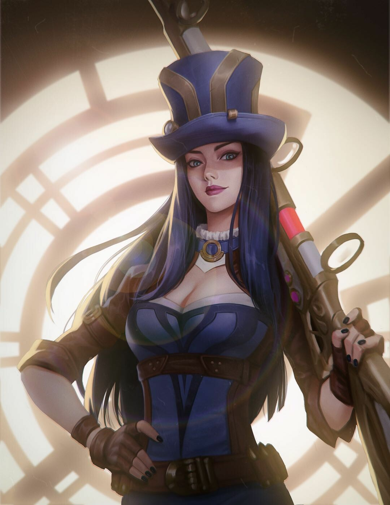
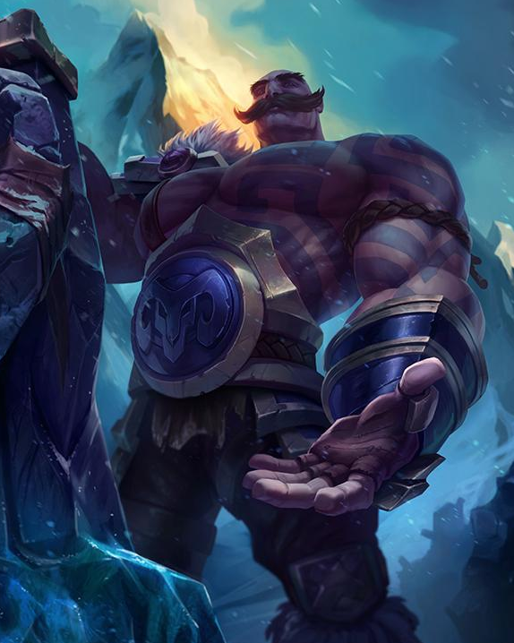

Tras abandonar la orden de los Kinkou y su título de Puño de la Sombra, Akali actúa ahora en solitario y está lista para convertirse en el arma mortal que necesita su gente. Aunque no renuncia a las enseñanzas de Shen, su maestro, ha jurado defender Jonia de sus enemigos, asesinándolos uno a uno. Los ataques de Akali son silenciosos, pero su mensaje se escucha con toda claridad: temed a la asesina sin maestro.
La ocupación noxiana de Jonia produjo mucho héroes, pero ninguno más improbable que la joven Irelia de Navori. Se entrenó en las antiguas danzas de su gente y adaptó su arte para la guerra, usando los movimientos elegantes y diligentemente practicados para hacer levitar una variedad de cuchillas letales. Tras demostrar su valía como luchadora la empujaron al papel de líder y representante de la resistencia y, hasta el día de hoy, sigue dedicada a la preservación de su tierra natal.
En los oscuros adentros de Runaterra, el súcubo Evelynn deambula en busca de su siguiente víctima. Acecha a sus presas con una voluptuosa fachada femenina, pero cuando alguien sucumbe a sus encantos, Evelynn libera su auténtica forma. Después somete a su víctima a un tormento atroz, deleitándose con su dolor. Para el súcubo, estos 'ligues' son aventuras amorosas inocentes. Para el resto de Runaterra, son historias macabras de lujuria retorcida y dantescos recordatorios del precio del deseo lascivo
Reconocida como su mejor pacificadora, Caitlyn es también la mejor arma de Piltover para librar a la ciudad de sus elusivos elementos criminales. A menudo trabaja con Vi, y actúa como un frío y eficiente contrapunto para la naturaleza más impetuosa de su socia. A pesar de que lleva un rifle hextech único, el arma más poderosa de Caitlyn es su inteligencia superior, lo que le permite colocar trampas elaboradas para cualquier infractor de la ley lo suficientemente necio como para operar en la Ciudad del Progreso.
Bendecido con bíceps enormes y un corazón aún más grande, Braum es un héroe muy apreciado en Freljord. Todas las tabernas al norte del Fuerte Helado brindan por su fuerza legendaria. Se dice que taló un bosque de robles en una sola noche y convirtió una montaña entera en escombros. Cargando una puerta acorazada encantada a sus espaldas como escudo, Braum recorre el gélido norte luciendo una sonrisa bigotuda tan grande como sus músculos: un verdadero amigo para todos los necesitados.